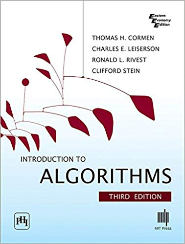

computer library
computer library
Prominent books
|  |  |
Introduction to Algorithms |
Operating System Concepts |
 |
|
Advanced Data Structures |
Computer Organization and Design |
This specialization is concerned with how to build systems suitable for different fields in life. This specialization is also concerned with how to communicate within networks, protect information and protect communication between networks.
The specialization of computer science always focuses on the systems, data and security, whether for networks or information and how to create algorithms to solve certain problems.
It solves complex problems by developing great solutions suitable using mathematical analysis and algorithms using programming languages and also focuses on how to protect a specific program or network.